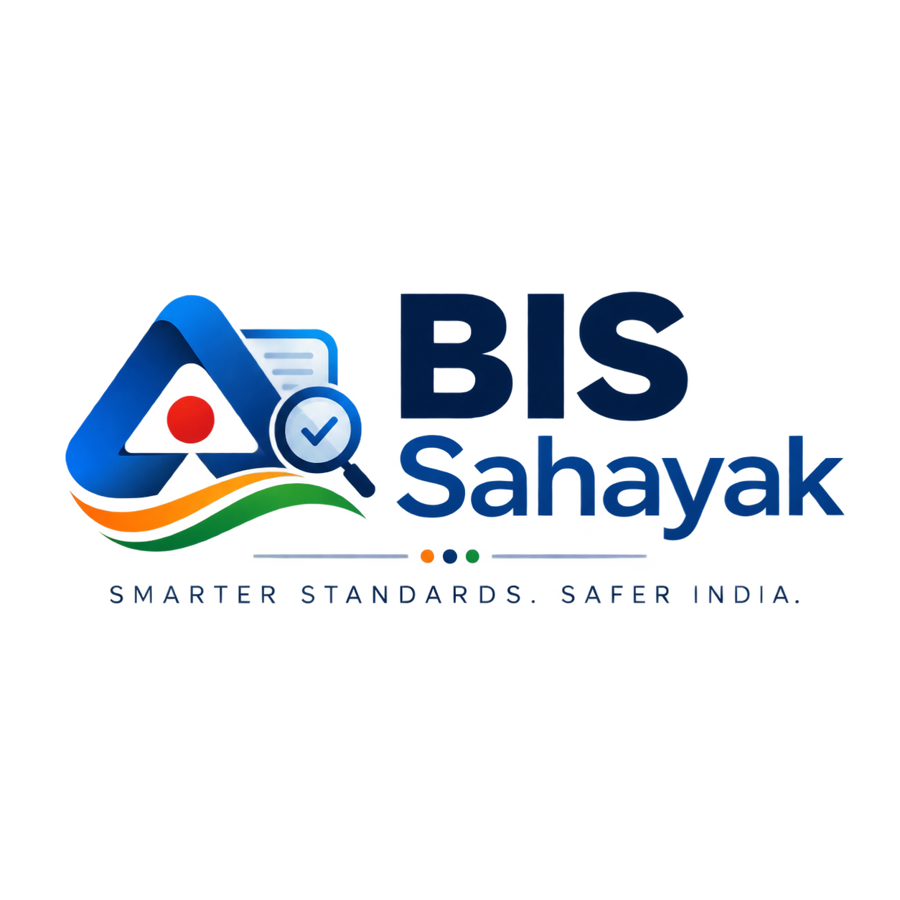

Ask questions, discover applicable standards, understand certification requirements, and navigate BIS services — all from one intelligent interface.
WHAT CAN I HELP WITH?
“Which BIS standard applies to my product?”
Prototype knowledge base · Responses should be verified against official BIS sources before regulatory or certification decisions.
Six BIS services in one conversational interface, each answer traceable back to a document.
Natural-language Q&A on any Indian Standard, with citations to the exact clause.
Describe a product, get the applicable IS code and whether certification is mandatory.
A step-by-step walkthrough of the ISI licensing process, trackable to completion.
Understand hallmarking, purity marks, HUIDs and consumer verification guidance.
Locate BIS-recognised labs by product category and state.
Ask and receive answers in English, Hindi, or Gujarati — built for citizens, not just engineers.
Search by product, or browse a category, to see which Indian Standard applies.
The ISI mark licensing process, step by step. Tap a step to mark it done and track progress.
Enter the HUID (Hallmark Unique ID) printed on the jewellery to check it against records.
Demo accepts sample codes AZ4R2K and K9J2QX — any other input returns "not found".
BIS-recognised laboratories in the demo dataset, filterable by category and state.
Get BIS Sahayak directly in your browser with our Chrome Extension Copilot.
Whether you are reading about consumer electronics, browsing an e-commerce catalog, or reviewing industrial product specifications, BIS Sahayak Copilot is one click away.
Ask any BIS question without leaving the page you are on.
Automatically reads active tab content to evaluate BIS compliance.
Instant toggle across English, Hindi, and Gujarati.
Quickly find mandatory standards and NABL testing labs.
Follow these simple steps to load the extension in Google Chrome, Brave, or Edge.
In Google Chrome, type chrome://extensions/ in the address bar and press Enter.
Toggle the Developer mode switch located in the top-right corner of the Extensions page.
Click the Load unpacked button on the top-left and select the extension folder from this project.
Click the puzzle icon on Chrome's toolbar and pin BIS Sahayak for 1-click intelligent assistance anywhere on the web!